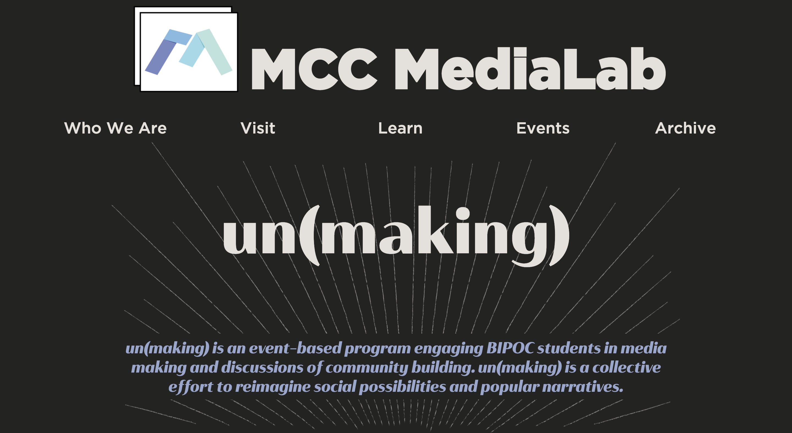
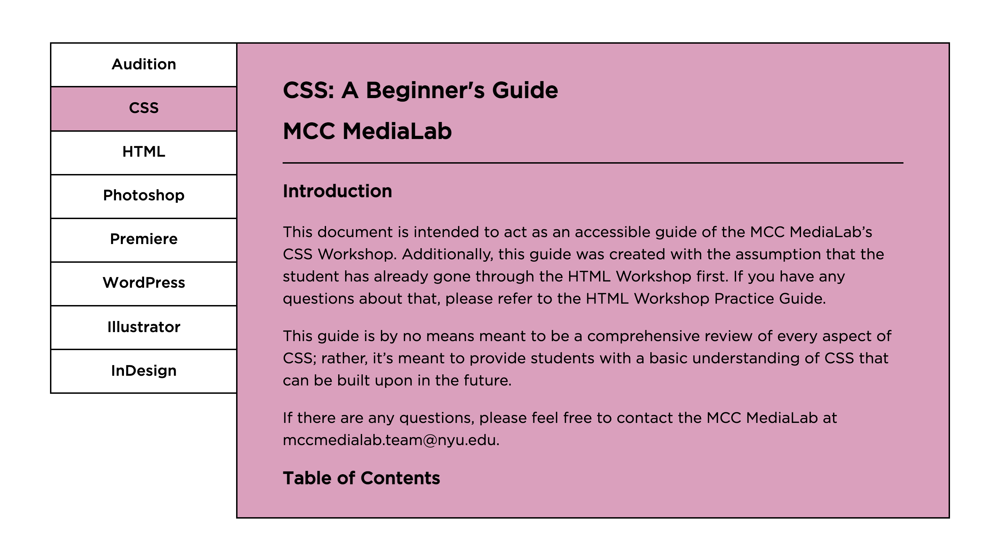

<website id="illustrator html/css js" date="may2020-may2021"/>
As a lead web developer of the MCC MediaLab Team in NYU Steinhardt, my responsibilities included coming up with new webpage formats, weekly web maintenance, ensuring compability of new webpages with the site's architecture, UX assessments, and accessibility check for WCAG compliance.
Designed, prototyped and developed by me, this page serves as an archive for the amazing digital work by students across our department. I have created a JavaScript-based filtering system that helps the user easily find a project based on a media type and a course it belongs to.
 see the website >
see the website >
A team effort of building a quick, well-designed, clean, and efficient Lab website that serves the entire MCC department. I developed index, Lab Hours, Video Tutorials, Practice Guides, mediaWorks, un(making), and Archive pages, and regularly maintain the entire site.

see the page >
A "special edition" page with engaging CSS animations for the MediaLab's program that created digital media making spaces for BIPOC students. I worked with a designer on our team to help her understand possibilities of the web format and adapt her vision of this event's promotion into code.
 see the website >
see the website >
I co-designed and fully developed this website that serves students taking a Digital Media Theory and Practice course.

see the page >
I came up with a new format for this page to publish software tutorials that the Team (including myself) wrote. I designed the page to look like a library catalogue, and I coded it with JavaScript.